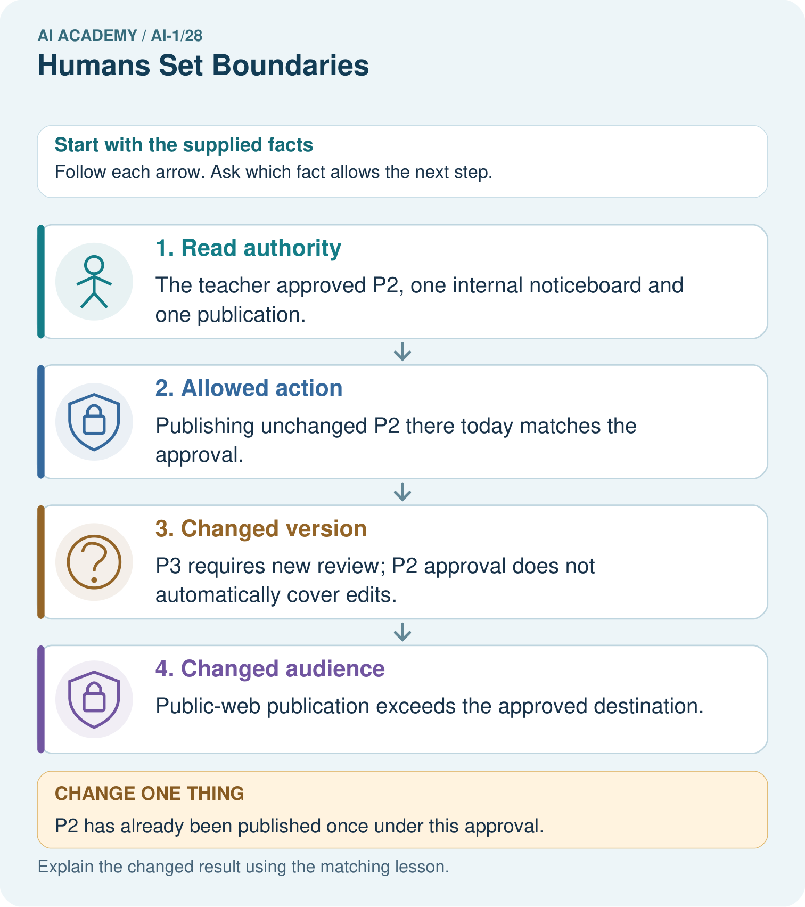

AI Academy · Level 1 · Grade 6 · Week 28 · Workbook
Humans Set Boundaries
Learn to understand, design, build, test and explain AI systems responsibly.
Project: Helpful Classroom Sorter
Workbook · 1 of 18
Recall and choose your starting point
Try the recall before opening notes. Then use a different colour or a labelled second line to correct your explanation.
Verify Important Outputs
Without opening the old lesson, explain one key idea from Verify Important Outputs. Give an example and a mistake that the idea helps you avoid.
Generate, Retrieve, or Calculate?
Without opening the old lesson, explain one key idea from Generate, Retrieve, or Calculate?. Give an example and a mistake that the idea helps you avoid.
Missing and Unbalanced Examples
Without opening the old lesson, explain one key idea from Missing and Unbalanced Examples. Give an example and a mistake that the idea helps you avoid.
Workbook · 2 of 18
Practise with fading help
Use W2: Read an approval without enlarging it for Human authority and permission. Record the answer once; the lesson and workbook refer to the same attempt.
| Given inputs | Procedure I chose | Middle steps | Result and check |
|---|---|---|---|
Workbook · 3 of 18
Individual reasoning check
Use the worked case for Human authority and permission. Proposed explanation: “A working button grants permission”. Decide whether this explanation is supported. Point to the step or supplied fact that decides; explain your repair if needed.
Workbook · 4 of 18
Independent transfer case
Independent case: Transfer the permission check to a new case
In a fictional library, the librarian controls the internal shelf list. The librarian tells assistant Jo: “Replace the internal list with checked version L2 on Friday, once. Do not change the public catalogue.” It is Friday, L2 remains checked, and no replacement has occurred. A tool offers both destinations. Assess these proposals separately: Jo replaces the internal list with L2; Jo updates the public catalogue with L2; visitor Sam replaces the internal list with L2; Jo replaces the internal list with a changed L3. Identify the approval detail that settles each case.
Attempt this case before feedback. Record any help. Earlier examples below are further practice; a case already practised with feedback cannot establish fresh transfer.
Workbook · 5 of 18
Your learning target
A classroom assistant may draft a reminder but cannot send messages. It displays a completed draft and waits. A student writes 'looks good' without a destination. Has a clear send authorisation been given? Specify what is needed.
Workbook · 6 of 18
Solve the given case
An assistant may suggest object locations; a teacher must approve moving valuable equipment.
What may happen without approval?
Show your trace, calculation or evidence
Workbook · 7 of 18
Check a changed case
A sorter marks a child's notebook throw away. Who should decide whether it is discarded? Name a boundary the system should enforce.
My independent answer and reason
Week 28 Test and reflect
Workbook · 8 of 18
Design a revealing test
Create a changed input, boundary case or missing-information case. Write the expected answer or safe response before testing.
| Test record | My evidence |
|---|---|
| Changed input or condition | |
| Expected answer or fallback | |
| Observed result | |
| Why the result occurred |
Workbook · 9 of 18
Project checkpoint
Complete the sorter's human-control map: permissions, review triggers, override, correction, and stop conditions.
The project change and evidence I will keep
Workbook · 10 of 18
Self check
I can explain the mechanism. I can show evidence. I can handle a changed case. I can name a limit. Mark each as not yet, with help or independently, and attach supporting work.
Teacher review ____________________ Next step ____________________
Workbook · 11 of 18
Transfer practice from the original programme
A classroom assistant may draft a reminder but cannot send messages. It displays a completed draft and waits. A student writes 'looks good' without a destination. Has a clear send authorisation been given? Specify what is needed.
Record support used: none, hint or teacher explanation.
Workbook · 12 of 18
W1 Separate three kinds of evidence
A tool offers a Public website button. The exhibition facts in A have been verified. The teacher’s approval covers the classroom board only. State what the button, the fact check and the approval each establish. Decide whether the editor may publish A publicly.
Workbook · 13 of 18
W2 Read an approval without enlarging it
List the decision maker, allowed actor, version, destination, timing and number of postings in the original exhibition approval. Before any posting and with no changes to the facts or permission, explain whether the editor can carry out that exact action without asking again.
Workbook · 14 of 18
W3 Prepare a reviewable change
The room changes to Room 8 and the editor creates B. Explain why publishing old A and publishing unapproved B each fail a different check. Write a specific request for the teacher to review B, keeping the original destination and one-posting limit.
Workbook · 15 of 18
W4 Transfer the permission check to a new case
In a fictional library, the librarian controls the internal shelf list. The librarian tells assistant Jo: “Replace the internal list with checked version L2 on Friday, once. Do not change the public catalogue.” It is Friday, L2 remains checked, and no replacement has occurred. A tool offers both destinations. Assess these proposals separately: Jo replaces the internal list with L2; Jo updates the public catalogue with L2; visitor Sam replaces the internal list with L2; Jo replaces the internal list with a changed L3. Identify the approval detail that settles each case.
Workbook · 16 of 18
W5 Avoid an accidental second action
Jo attempts the permitted internal replacement, but the tool’s response does not show whether it succeeded. Explain why immediately repeating it is a poor choice under a once-only approval. What should Jo check? If Jo discovers a public change occurred instead, describe the first recovery steps.
Workbook · 17 of 18
Feedback, return check and learning record
| Evidence | My record |
|---|---|
| Worked alone / hint / model | |
| First step I repaired and why | |
| New case checked later; date and result | |
| What I can now explain without notes | |
| One remaining question |
Revisit this idea with your teacher after a delay. Familiarity is different from explaining and using it on a changed case.
Workbook · 18 of 18
Pictorial case practice: Humans Set Boundaries
A fictional teacher approves one checked classroom poster for internal display.
Approval: publish exactly poster P2 on the classroom noticeboard today, once.
Assistant proposes P2 there; P3 there after an edit; P2 on a public website.

Which original proposal is authorised? Why do the other two need separate approval?
Support used: alone / hint / worked example. This record is practice evidence.
Project connection: Record sorter actions allowed automatically and actions requiring the classroom owner’s explicit review.